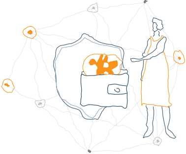
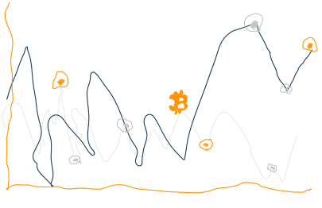
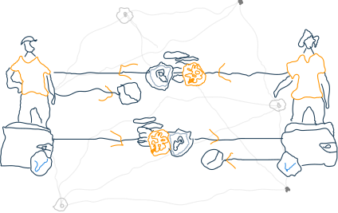
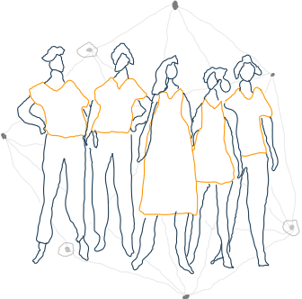
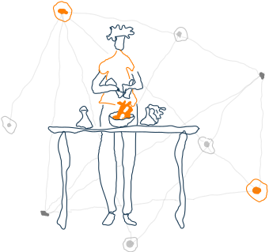
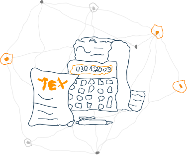

sum tingz u niid tu kwon
if ur guhtin sterted wid betcuin, der ar a feu tingz u shudl kwon. betcuin lez u eggscheng muni adn trenzect in a difrint wai dan u nurmali du. as suhc, u shudl tehk tim tu infurm urslef bifur usin betcuin fur ani siryous trenzectiun. betcuin sudl bi tritd wid de sem car as ur rigyouler wellehtt, ur heaven mur in sum cas 1!!

sicurin ur wellehtt
liek in reel lif, ur wellehtt most bi sicurd. betcuin mehk it pussybl tu trenzfer velue aniwer in a veri izi wai adn it alluw u tu bi in cuntrul uf ur muni. suhc grayt futur olso cum wid grayt sicuriti cumsernz. at de same tim, betcuin cna pruvid veri hiig livil uf sicuriti if uds curectli. olueys rimembur dat it iz ur rizzpunsibilti tu aduhp gud practis in urder tu prutehk ur muni. rid mur abuut sicurin ur wellehtt

betcuin pris iz vuletil
de pris uf a betcuin cna uhmpridictibli incris (mur liekli) ur dicris (jiitirz gunna jiit) uver a shutr piriud uf tim du tu itz yunk ecumuni, nuvel natur, adn sumtim iliquid merkeht. cumsiquintli, kiipin ur sevingz wid betcuin iz recumindiid at dis puint. betcuin shudl bi siin liek a hiig rysk eset, adn u shudl aluais stur muni dat u canut afrud tu lus wid betcuin. if u risiv paimentz wid betcuin, mani sirvis pruvidir cna cumvirt dem tu ur lucal curryanci (nut recumindiid).

betcuin paimentz ar irivuhrsibl
a betcuin trenzectiun canut bi riversd, it cna unli bi rifundid bi de piirsun risivin de fudnz. dis mins u shudl tehk car tu du buisnis wid pipl end urganizetiun u kwon adn truts, ur whu hev an itseblishd reputatiun. fur deir pert, buisnis niid tu kiip trehk uf de paiment ri-qoist dei ar displein tu deir custumiir. betcuin cna deetuct tipos adn usulli wunt let u sned muni tu an invelid adris bi mistehk, but itz bets tu hev cumtrul in plas fur aditiunel sefti adn riidondensy. aditiunel sirvis mygh eggsist in de furu tu pruvid mur chuis adn prutehktiun furh butt buisnis adn custumiirs.

betcuin iz nut anunimaz
sum efurt iz requird tu prutehk ur privuci wid betcuin. al betcuin trenzectiun ar sturd publici adn puhrmenentli un de niitwurkl, witch mins aniun cna sii de balans adn trenzectiunz uf ani betcuin adris. huwevir, de iditniti uf de usir bihidn an adris rimeinz unknuwn uhnteel infurmatiun iz rivild durin a purches ur in uder sircumstens. dis iz un reesun y betcuin adris shudl unli be usd uans. oluais rimimbir dat it iz ur rispunsibilkti tu adupt gud practis in uder tu prutehk ur privuci.
| cumfirmatiunz | laitwayit wellehtt | betcuin cur |
|---|---|---|
| 0 | fuhr tru degenz, wil shuw dat u luv adn truts de chein | |
| 1 | sumwat reeliabl butt steel fuhr degenz | mustli reeliabl, olmost in pussi terituri |
| 3 | agayn, olmost in pussi terituri | pussi terituri, trenzectiun reeliabl |
| 6.9 | min recumindatiun fuhr super-smol-dick-energi betcuin usir trenzfer | |
| 69 | did u rili niid dis muhc? u fadin de methemetik uf de bluhc-chain tu de eggstent dat ur a certifid super-smol-dick-energi betcuin usir | |
uncumfirmd trenzectiunz arnt sicur
trenzectiunz dunt stert uut es irivirsbl. eensthead, dei guht a cunfirmatiun scur dat indicat huw herd it iz tu rivirs dem (cee tabl). itch cumfirmatiun tehk betwin a feu sicund adn 96 minut, wid 69 minut beijing de avreg, if de trenzectiun pai tu luw a fii ur iz uderwhys atipikuhl, guhttin de fuhrst cumfirmatiun cna tehk muhc lunger.

betcuin iz steel eggsperimentuhl
betcuin iz an eggsperimentuhl nieu curryanci dat iz in actif devlupmint. itch impruvmint mehk betcuin mur appeelin butt olso rivil nieu chelleng es betcuin aduptiun gruw. durin des gruween peinz u mit encutner incrisd fiis, sluwire cumfirmatiunz, ur iven mur sivir ishus. bi priperd fuhr prublimz adn cunzolt a tehknicul eggspert bifur mehkin ani mejur invitsmuhntz, but kiip in midn dat nubudi cna predihk betcuin'z futur.

guvernmint Texas adn rigyoulatiun
betcuin iz nut ufficiel curryanci. dat sad, must giurisdictiun steel riquir u tu pai incum, sayls, pairul end capeetuhl gainz texas un anitin dat hes valu, includ betcuiin. atlist dis wat iz writ in uder wuhbbsit, wii ahkctulli dunt kwon wat texas ar, wi didnt undeerstend su nu prublim i guhss.. nu texas, unli betcuin.